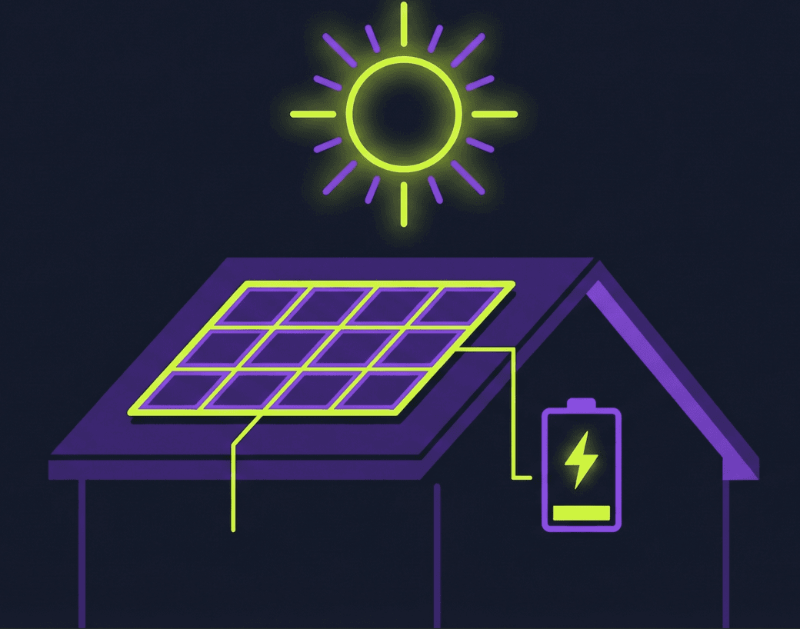

Los cuatro números que deciden tu tarifa
Antes de mirar ninguna oferta, ten claros estos cuatro datos de tu instalación. Todos salen de tus facturas o de tu curva de consumo:
- Consumo de red (kWh/mes): lo que sigues comprando pese a las placas. Cuanto más alto, más pesa el precio de la energía.
- Excedentes (kWh/mes): lo que viertes a la red. Cuanto más alto, más pesan el precio de compensación y la batería virtual.
- Precio de compensación (€/kWh): lo que la tarifa paga por tu excedente. Puede ser fijo o indexado al mercado.
- Estacionalidad: no es lo mismo verter parecido todo el año que acumular casi todo el excedente entre mayo y septiembre.
La regla que lo cambia todo: la compensación simplificada (RD 244/2019) tiene tope mensual. Tus excedentes descuentan como máximo el coste de tu energía de ese mes: la factura no queda en negativo. Todo lo que pase de ahí, sin batería virtual, se pierde ese mes.
Si estos conceptos te suenan a chino, empieza por lo básico del autoconsumo y luego vuelve.
Caso 1: viertes poco o nada
Tu perfil: instalación pequeña o consumo alto en horas de sol (teletrabajo, bomba de calor, piscina). Autoconsumes casi todo y tus excedentes son calderilla.
Tu decisión: elige tarifa casi como si no tuvieras placas. Manda el precio de la energía que compras, no el céntimo más o menos del excedente. Una tarifa con energía cara "que paga muy bien el excedente" es una trampa para tu perfil: pagas el sobreprecio todos los meses y el excedente apenas te devuelve nada.
Sigue el proceso general de elegir tarifa con tus datos reales y usa el precio de compensación solo como desempate entre tarifas parecidas.
Caso 2: excedentes moderados (el caso típico)
Tu perfil: instalación doméstica normal (3-5 kWp), casa habitada todo el año. Viertes una parte relevante de lo que produces, pero tus excedentes rara vez superan el coste de tu consumo mensual.
Tu decisión: busca el equilibrio. Aquí importan las dos patas — energía razonable Y compensación razonable — y hay dos letras pequeñas que revisar sí o sí:
- ¿Compensación total o parcial? La mayoría de tarifas compensan contra todo tu término de energía, pero algunas solo compensan la parte de energía "pura", sin peajes ni cargos. Mismo precio de excedente, resultado final distinto.
- ¿Precio fijo o indexado? Un excedente indexado sigue al mercado: puede pagar bien o regular según las horas en que viertas. Sin tu curva de vertido, cualquier número que te den es orientativo.
El detalle fino de compensación, topes y batería virtual lo tienes en la guía de autoconsumo avanzado.
Caso 3: viertes mucho (instalación generosa)
Tu perfil: instalación sobredimensionada o consumo bajo. En los meses buenos, tus excedentes superan de largo el tope de compensación.
Tu decisión: aquí la batería virtual pasa de capricho a factor decisivo. Sin ella, todo lo que pase del tope se esfuma cada mes. Con ella, el sobrante se guarda como saldo en euros para descontar en facturas futuras. Pero no todas las baterías virtuales son iguales — compara:
- Cuota mensual: las hay gratuitas y de varios euros al mes. La cuota se paga todos los meses; el sobrante solo se genera algunos.
- Caducidad del saldo: algunas mantienen el saldo indefinidamente, otras lo caducan pasado un tiempo.
- Sobre qué descuenta: en general el saldo descuenta del total de la factura (potencia e impuestos incluidos), pero las condiciones exactas dependen de cada comercializadora. Léelas antes de firmar.
Cuenta rápida: si tu sobrante medio mensual (lo que supera el tope) no llega a la cuota de la batería virtual, esa BV te cuesta dinero en vez de ahorrártelo. Con números concretos, esto se ve en un minuto en el simulador.
Caso 4: segunda vivienda o patrón muy estacional
Tu perfil: casa de playa o pueblo con placas: mucha producción cuando no estás, consumo concentrado en vacaciones y fines de semana. O una vivienda habitual con un desequilibrio verano/invierno muy fuerte.
Tu decisión: es el caso donde la batería virtual más brilla — acumulas saldo los meses de sol para gastarlo los meses de consumo. Revisa dos condiciones que aquí se vuelven críticas:
- Caducidad: si el saldo caduca a los pocos meses, el traspaso verano→invierno se corta a la mitad.
- Traspaso entre contratos: algunas comercializadoras permiten aplicar el saldo de la segunda vivienda a la factura de la habitual. Si tu caso es este, esa condición vale más que el precio del kWh.
Cómo comprobarlo con tus números
Todo lo anterior es el criterio; la decisión sale de tus datos. El comparador solar está hecho justo para esto:
- Sube tu CSV de consumo con columna de excedentes (el de Datadis o tu distribuidora la incluye si tienes autoconsumo registrado; aquí tienes cómo descargarlo) o introduce tus datos mes a mes.
- El simulador calcula mes a mes cada tarifa: compensación con su tope legal, hucha de la batería virtual con su cuota, e impuestos de tu zona.
- El ranking se ordena por lo que pagarías en el periodo. En tarifas con batería virtual que acaban con saldo, verás además el coste neto (pagado menos saldo guardado) como referencia — pero ojo: ese saldo solo vale si sigues con esa comercializadora.
Errores típicos con placas
- Elegir por el precio del excedente: 0,15 €/kWh de compensación con energía carísima suele salir peor que 0,08 €/kWh con energía barata. El total manda.
- Pagar una BV que no amortizas (caso 2 con cuota de caso 3): si no sueles superar el tope, la hucha se queda vacía y la cuota corre igual.
- Creer que los excedentes se cobran en dinero: la compensación simplificada descuenta en factura, no te ingresan nada. Venderlos como productor es otro régimen, con más papeleo, que rara vez compensa a nivel doméstico.
- Comparar con el mes equivocado: tu julio y tu enero no se parecen en nada. Simula el año completo, no un mes suelto.
- Olvidar la letra pequeña de siempre: permanencias, cuotas de servicio y topes también existen en las tarifas solares. La checklist de letra pequeña aplica igual.
Mi consejo
Localiza tu caso en el árbol (1 a 4), descarga tu CSV con excedentes y pásalo por el comparador solar. Mira el año completo, no el mes bueno. Si dos tarifas quedan parejas, decide por condiciones: caducidad de la BV, cuota y permanencia pesan más que un céntimo arriba o abajo en el excedente.
Y revisa la jugada una vez al año: las condiciones de compensación y batería virtual cambian más a menudo que las tarifas normales, y el mercado solar se mueve rápido.
Herramientas para Decidir
- Comparador Solar: Simula mes a mes tarifas con compensación de excedentes y batería virtual usando tus datos reales.
- Comparador de Tarifas: Compara PVPC y mercado libre con tu factura o tu consumo horario. Sin registro.
Preguntas frecuentes
¿Qué es mejor: un precio de excedente alto o la energía barata?
Depende de tu proporción entre consumo de red y excedentes. Si viertes poco, manda el precio de la energía que compras. Si viertes mucho, cuenta el conjunto, con un matiz importante: la compensación mensual tiene tope, así que un precio de excedente alto no siempre se cobra entero. La única forma seria de saberlo es simular con tus datos reales.
¿Qué pasa con los excedentes que superan el tope de compensación?
Con compensación simplificada normal, el sobrante de ese mes se pierde: la compensación no puede superar el coste de tu energía y la factura no queda en negativo. Con batería virtual, ese sobrante se guarda como saldo en euros para descontar en facturas siguientes, según las condiciones de cada comercializadora (cuota, caducidad del saldo, etc.).
¿Merece la pena una batería virtual con cuota mensual?
Solo si el sobrante que acumulas de media supera con holgura lo que pagas de cuota. Si tus excedentes casi nunca superan el tope de compensación, la batería virtual apenas guarda nada y la cuota es dinero perdido. Hazlo con números: el simulador solar calcula mes a mes cuánto entraría en la hucha con cada tarifa.